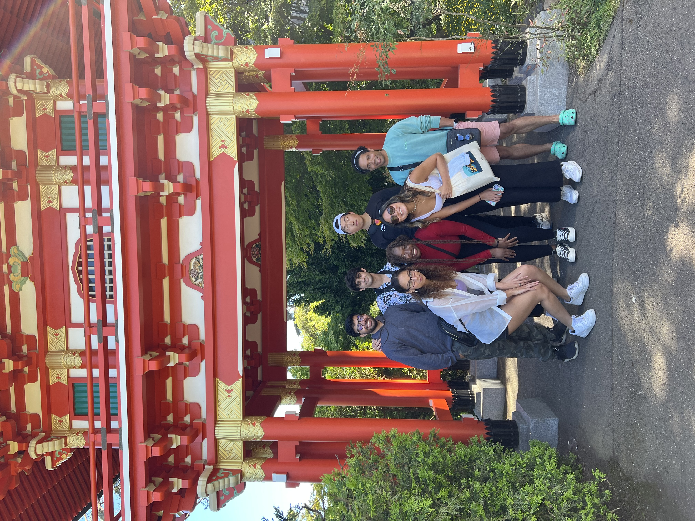
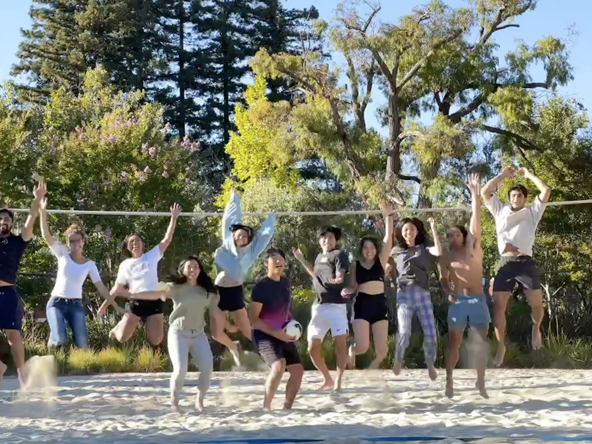
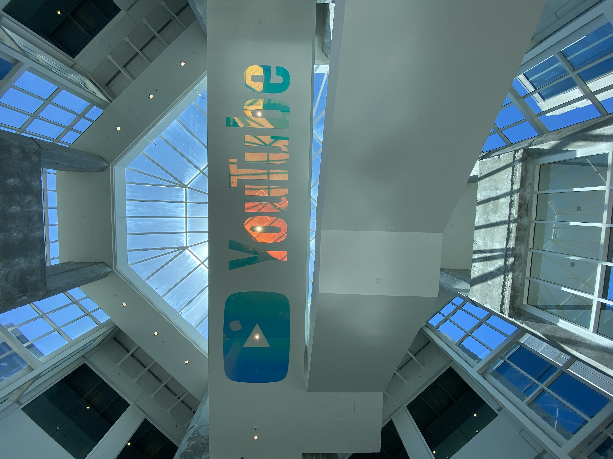
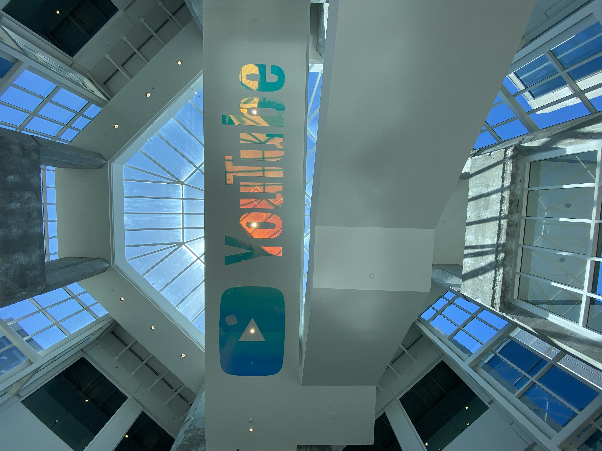

This past summer I worked as a STEP intern on Google’s Mountain View campus. Over the course of 12 weeks, I worked on a team within Google Ads to improve the user interface and experience of an internal tool, and to increase the functionalities of that tool. Over the course of 10 weeks of the code-intensive part of the project, I wrote and modified over 1500 lines of code in Java, Javascript, HTML, and CSS, and utilized various data structures and Protocol Buffers. In the final two weeks, I refined my project overview paper, to be submitted to my host and co-host for review at the end of my internship, and also presented my achievements, learnings, and opportunities for future expansion in a slide deck to my team of over 13 engineers, project managers, designers, and interns.
Now, enough about all the technical jargon and intricacies. Since this was my first internship in the tech industry, I of course had to explore what Google had to offer. Outside of work, I spent time with my four other roommates (who were also Google interns) exploring campuses, meeting other interns who were studying across the country, and making memories for a lifetime. As an overview, in those 12 weeks, I visited 6 Google campuses, rode in a Waymo automated car in the streets of San Francisco, painted abstract art with the manager of my team, played beach volleyball more times than I can count on two hands, watched Halsey, The Chainsmokers, Charlie Puth, 5 Seconds of Summer, Tate McRae, and more artists perform in the Google Amphitheatre, hiked around Lake Tahoe, camped in Yosemite, explored the Youtube Headquarters, and did more than I could’ve ever imagined. From scooter rides in the morning to bike rides around campus, to G buses back home, to Ubers around town, we explored as much as we could of the ins and outs of Silicon Valley.
Part 1: Removing outdated, inconsistent information
The first part of my project this summer was centered around removing outdated or inconsistent information to users of the internal tool. My task was to hide certain attributes or aspects that created confusion amongst the users. One major challenge I had was first, understanding the existing database. The first couple of weeks involved a lot of conversation between my hosts and me, so I could understand what was going on beyond the surface of my screen–data pipelines, backend servers, retrieving and storing data from databases. Once I had a clearer understanding of how the code was actually working, I had a much better idea of how I could selectively filter out the information we wanted to display.
Part 2: Adding more relevant information
The second, and largest part of my project was centered around adding more helpful information to users of the tool. I met with my host and cohost to figure out what users wanted, stepping through their requests and needs. Then, I worked on applying my knowledge from the past few weeks in understanding how the existing codebase worked, to add consistent code. The first part of this phase was merely grabbing the right information; the second part involved displaying the information in a visually appealing manner. I talked to the users to clearly understand their needs, discussed with the team’s product manager on how the UI should look (analyzing color, shape, component, and more), conversed with my host and co-host on their requirements and needs, and finally checked in with the team’s manager to ensure the new components I was adding were in line with the existing look and feel of the interface.
-
Becoming more confident in my own abilities: I was really able to target my technical, professional, and personal skills throughout the summer, and I became so much better at believing in myself. I’d do some deeper research and debugging on my own before asking for help. I’d go to intern meet and greets to meet new people. I’d reach out to people on my team and UX designers to ask questions.
-
Communicating my needs: one of the biggest challenges and successes this summer was communicating with my host and co-host on issues I was facing. Often times, there were bugs and issues I was facing that I had no clue how to fix. Part of the solution was debugging and troubleshooting on my own, and part of the solution was asking for help.
-
Discovering the industry: beyond just doing my day-to-day work, I sought to understand how the people on my team fit together. It was truly amazing to be working alongside industry professionals who had been working for 15+ years and I learned to branch out and talk to interns from universities around the country, newgrads, engineers on my team, and my host and co-host about their experiences working at Google. Beyond that, I spoke to my mentor who worked at Waymo on everything ranging from imposter syndrome, to exploring different fields, to how to be satisfied in life. I also got the chance to explore UI/UX design by speaking with 3 designers at Google, and am interested in pursuing a career in that industry moving forward.
-
Exploring Google: a huge part of this summer was having fun and exploring what Google had to offer! From running around 6 campuses to trying diverse cuisines to bowling and rock climbing and playing beach volleyball to searching for big meeting rooms with other interns, I was so lucky to get a glimpse into all the fun and fresh things happening at Google.



My time at Google can be captured as 12 weeks. 57 days. 456 hours. But the mentorship, takeaways, and technical skills I gained from that time will last me so much longer. From the early morning scooter rides to the sunset buses back home to the days of debugging where it seemed like nothing worked, I wouldn’t trade those stressful days for anything. If anything, this summer made me realize my own abilities–and I can’t wait to continue exploring.
 
